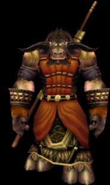
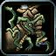
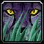

Класс друида (Druid)
предоставляет игроку доступ к огромному количеству стилей игры (больше
чем любой другой класс). В обычной форме друид может лечить и наносить
повреждения своими заклинаниями, в форме медведя друид действует как
воин-танк, в форме кошки игра за друида похожа на игру за разбойника.
Есть у друида доступ и к другим, безусловно полезным формам.
Играть за друида
соло сравнительно просто (обладая широким набором стратегий легко
справиться с монстрами практически в любой ситуации), да и в партии ему
рады: друид обладает очень хорошими буффами, может лечить почти как жрец
и при необходимости может заменить воина (в форме медведя).
Способность превращаться
в животных (менять формы) друид получает не сразу. Знания приходят
постепенно, с ростом уровней и по мере выполнения уникальных классовых
квестов друида:
10 уровень — форма
медведя (Bear Form, квест)
16 уровень — водная форма (Aquatic Form, квест)
20 уровень — форма кошки (Cat Form, тренер)
30 уровень — «быстрая» форма (Travel Form, тренер)
40 уровень — улучшенная форма медведя (Dire Bear Form, тренер)
40 уровень — форма мункина — «совиного медведя» (Moonkin Form, талант из
ветки Balance)
Существует три
основных варианта развития (и, соответственно, стратегии) друида в
зависимости от выбранной ветки талантов:
1.
Баланс-друид (ветка Balance) — улучшенные боевые заклинания (как
наносящие вред, так и контролирующие (корни)). Этот вариант лучше
подходит для соло-убийства элитных монстров и группового ПвП.
2.
Ферал-друид (ветка Feral) — улучшенные способности в формах
медведя и кошки. Такой вариант лучше подходит для безостановочного
соло-убийства обычных монстров (форма кошки), замещении воина в партии
(форма медведя) и соло-ПвП (форма медведя).
3.
Ресторейшен-друид (ветка Restoration) — улучшенные лечебные
навыки. «Партийный» вариант развития друида. Хорош в сложных финальных
подземельях на 60 уровне.
Рассмотрим стратегии
игры за каждый тип друида подробнее.
Баланс-друид
Друид, который
бОльшую часть талантов вложил в ветку Balance. Дерется или в обычной
форме или в форме мункина, которая доступна только баланс-друидам. В
форме мункина друид может пользоваться только заклинаниями из школы
Balance, но зато обладает улучшенной защитой (+360% к обычной защите
друида) и аурой, повышающей для всех сопартийцев друида шанс нанесения
критического удара заклинаниями.
Вкладывая таланты в
школу Balance, друид повышает урон своих заклинаний, улучшает их скорость
и уменьшает их стоимость. Кроме того, друид получает доступ к некоторым
новым полезным способностям (например, автоматическое попадание в
обездвиживающие корни (Entangling Roots) того, кто ударит друида в бою).
Базовая стратегия
игры за баланс-друида:
Ферал-друид
Друид, который
бОльшую часть талантов вложил в ветку Feral Combat. В бою использует
формы медведя и кошки. Форма медведя дает друиду +360% к защите и
увеличивает жизнь, наделяет друида некоторыми воинскими способностями. В
форме кошки друид больше всего напоминает класс разбойник. При выборе
финального таланта из ветки Feral Combat друид получает ауру, которая
увеличивает шанс нанесения критического удара для всех сопартийцев, если
друид находится в форме медведя или кошки. Урон самого друида в
ферал-формах не зависит от урона носимого оружия. Он вычисляется в
зависимости от ловкости (форма кошки) и силы (форма медведя и кошки).
Вкладывая таланты в
школу Feral Combat, друид повышает способности в формах медведя и кошки и
получает доступ к некоторым новым способностям. Ферал-друид самый
многоплановый персонаж с наибольшим количеством стратегий. Часто за время
одного боя он меняет формы по нескольку раз, чтобы добиться наилучшего
завершения боя в зависимости от многих моментов. Арсенал способностей и
типов ведения боя огромен, и хороший ферал-друид всегда найдет нужную
способность в любой ситуации. Все это делает ферал-друида одним из лучших
претендентов на роль 5-ого члена команды в сложный инстанс.
Итак, базовые советы
по игре ферал-друидом:
Ресторейшен-друид
Друид, который
бОльшую часть талантов вложил в ветку Restoration. Ветка Restoration
улучшает лечащие способности друида и дает доступ к очень полезному
заклинанию Innervate (финальный талант Restoration). Это заклинание очень
быстро восстанавливает ману одного из сопартийцев, что крайне нужно в
финальных инстансах (главным образом жрецам). В каком-то смысле
ресторейшен-друид похож на баланс-друида. Урона хоть и меньше, но лечит
лучше. Поэтому партийные стратегии как ПвЕ так и ПвП почти точно такие
же, как и у баланс-друида (конечно, с учетом несколько изменившихся
возможностей).
Как ни странно, у
ресторейшен-друда есть новое атакующее заклинание — Insect Swarm. С
учетом него и строятся похожие на баланс-друида стратегии боя:
В заключение
описания стратегий хотелось бы еще раз отметить «базовость» данного гида.
Например, ресторейшен-друид может вложить 31 талант в Restoration, и
минимум 11 в Feral Combat, чтоб получить доступ к Feral Charge в форме
медведя с целью прерывания враждебных заклинаний, что в свою очередь
конечно изменит описанные выше базовые стратегии ПвП за
ресторейшен-друида. Т. е. это базовый гид по классу, который не ставит
себе задачу рассказать все о друидах. Он призван дать понимание в вопросе
о том, что же такое друид и чем одни его способности отличаются от
других.
Профессии
В качестве профессий
друид может выбрать любые понравившиеся, но наиболее полезными будут
следующие комбинации: